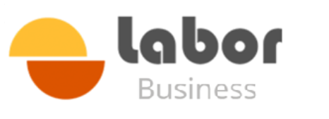
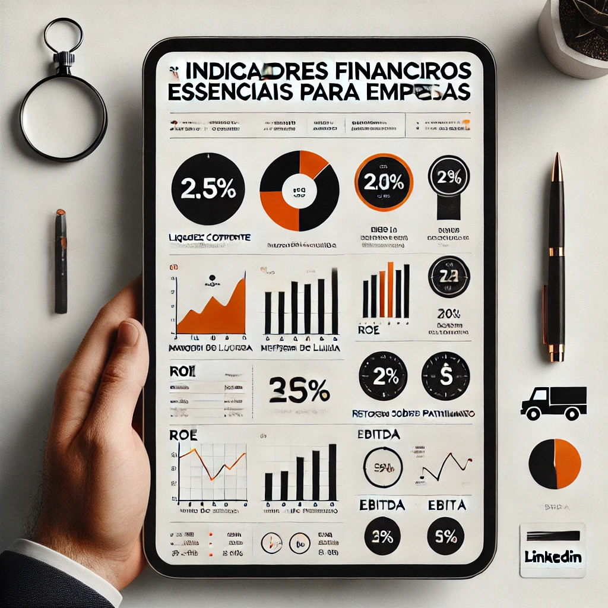

Consultoria estratégica premiumSua empresa está crescendo. Mas o lucro acompanha?
Normal o empresário conhecer o faturamento. Faz sentido. Mas quando perguntamos margem real, caixa futuro, custo da operação e lucro por cliente, a conversa muda.
Talvez você esteja vivendo uma destas situações.
Não é falta de esforço. Muitas vezes é falta de método, indicador e processo decisório.
Cresce, mas sobra pouco caixa
O faturamento aumenta, mas o dinheiro continua pressionado.
Vende, mas não sabe a margem
Preço definido por mercado, urgência ou sensação.
Opera, mas perde eficiência
Retrabalho, atrasos, perdas e custos invisíveis corroem o resultado.
Decide sem painel confiável
Quando o número chega tarde, a decisão já ficou cara.
Tem equipe, mas falta gestão
Pessoas boas sem processo viram dependência do dono.
O problema raramente está só nas vendas
Normalmente ele está no modelo de gestão.
O dinheiro não desaparece. Ele fica escondido.
Precificação incorreta
Produtos ruins parecem bons. Produtos bons parecem ruins.
Custos invisíveis
Horas improdutivas, estoque, erros, deslocamentos e refações.
Processos frágeis
Quando cada pessoa faz de um jeito, o resultado vira loteria.
Indicadores ausentes
Sem número, a empresa administra consequência, não causa.
Não entregamos relatórios. Entregamos decisões.
A consultoria começa entendendo a realidade, mas só gera valor quando ajuda a empresa a implantar rotina de gestão.
Transformamos números em estratégia.
Fluxo de caixa, DRE gerencial, capital de giro, orçamento e indicadores passam a orientar a decisão do empresário.
- Fluxo de caixa
- DRE gerencial
- Capital de giro
- Gestão de endividamento
- Controle orçamentário
- Indicadores financeiros
- Planejamento financeiro
- Tomada de decisão estratégica

Quanto você realmente ganha em cada venda?
A pergunta parece simples. Mas a resposta costuma revelar o ponto mais caro da empresa.
Calculamos
Custo direto, custo indireto, margem, ponto de equilíbrio e preço mínimo.
Comparamos
Margem por produto, cliente, canal, serviço ou projeto.
Margem realPreço mínimoPonto de equilíbrioCusto hora
Crescimento previsível não depende de sorte.
Faz sentido vender mais. Mas vender melhor exige funil, rotina, metas e leitura de conversão.
Funil comercial
Etapas claras da prospecção ao fechamento.
CRM
Organização de oportunidades e histórico.
Metas
Objetivos conectados à margem, não só receita.
Gestão
Rituais comerciais e cobrança saudável.
O lucro é produzido na operação antes de aparecer no financeiro.
Quando a empresa reduz retrabalho, padroniza rotinas e mede produtividade, o resultado financeiro deixa de ser surpresa.
Organização produtiva
PCP, prioridades, prazos, responsáveis e indicadores operacionais.
Eficiência
Redução de desperdício, atraso, perda e refação.
Construir patrimônio é importante. Protegê-lo é fundamental.
Atuamos na organização societária, sucessão, governança e separação de riscos entre operação, família e patrimônio.
Holding patrimonial
Organização e proteção de bens.
Holding operacional
Separação de riscos e estrutura empresarial.
Sucessão e governança
Continuidade, regras e redução de conflitos.
Crédito sem estratégia gera dívida. Crédito com estratégia gera crescimento.
A Labor Business conecta empresas a soluções de crédito com avaliação de finalidade, capacidade de pagamento e impacto financeiro.
Capital de giro
Reforço de caixa com planejamento.
Expansão
Máquinas, estrutura, projetos e aquisições.
Reestruturação
Troca de dívida cara por estrutura mais saudável.
Benefícios que fortalecem a empresa e valorizam a equipe.
VA e VR
Vale alimentação e refeição.
Saúde
Plano de saúde e odontológico.
Seguros
Seguro de vida e proteção corporativa.
Frotas
Combustível, manutenção e controle.
Visão financeira, operacional e estratégica no mesmo diagnóstico.
A Labor já tem histórico de atendimento empresarial. A Labor Business amplia essa relação para gestão, finanças, crédito, benefícios e estruturação.
anos de atuação Labor
empresas na base de relacionamento
E se você descobrisse onde sua empresa está deixando dinheiro na mesa?
Talvez o maior custo da empresa não seja fornecedor, imposto ou folha. Talvez seja seguir decidindo sem informação suficiente.
Labor Business | Soluções financeiras e estratégicas para empresas